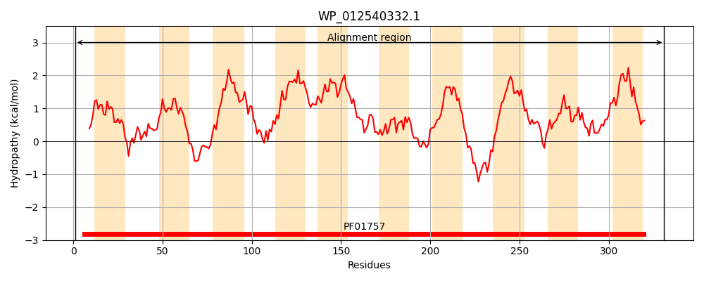
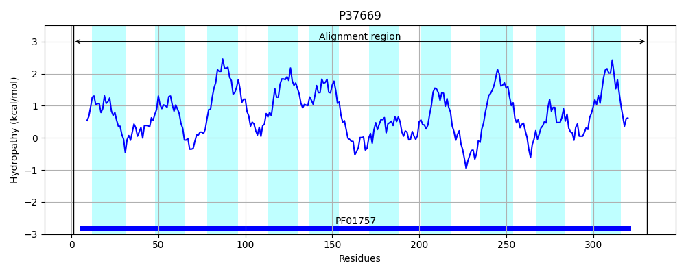
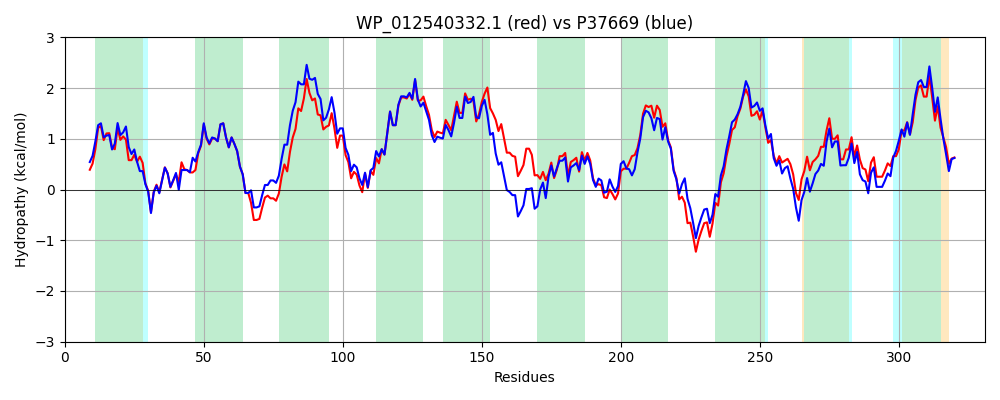

Hit Accession: P37669
Hit TCID: 9.B.97.1.1
Hit Description: gnl|BL_ORD_ID|10128 gnl|TC-DB|P37669|9.B.97.1.1 Inner membrane protein yiaH OS=Escherichia coli (strain K12) GN=yiaH PE=1 SV=1
Mach Len: 331
e:0.000000
Query TMS Count : 10
Hit TMS Count: 10
TMS-Overlap Score: 8.900000
Predicted Substrates:None
BLAST Alignment:
Score: 1322 , Bit scores: 513 bits, E-value: 0.0e+00, Alignment length: 331, Percentage identity: 74
Query: 1 MQEKIHWITNLRGIACMMVVMIHSTSWYITHPHAITLMEWDIANLLNSASRVSVPLFFMISGYLFFGERSAQPRHFWRIGLCIAFYSALSLLYIALFTHINVELSLKNLLQKPVFYHLWFFFAIAVIYLLSPLIQVKSVSGKMLLVLMAILGILANPNMVSVKAAGIEWLPVNLYINGDTFYYVLYGVLGRAIGTLDTNKKWLTPFCAALFIAAVWVISRGTLHELRWRGDFGDTWYLYCGPAVFVCAVALLTLAKNWLNARPLPGIACIARHSLGIYGFHALIVHALRASHLELSRWPLLDIVWIFSAALLGSLLLSGLVQRIDSRRLVS 331
MQ KI+WI NLRGIAC+MVVMIH+T+WY+T+ H+++ + WDIAN+LNSASRVSVPLFFMISGYLFFGERSAQPRHF RIGLC+ FYSA++LLYIALFT IN+EL+LKNLLQKPVFYHLWFFFAIAVIYL+SPLIQVK+V GKMLLVLMA++GI+ANPN V K G EWLP+NLYINGDTFYY+LYG+LGRAIG +DT K L+ AALF V++ISRGTL+EL+WRG+F DTWYLYCGP VF+CA+ALLTL KN L+ R + G+ I+RHSLGIYGFHALI+HALR +EL WP+LDI+WIF A L SLLLS LVQRID RLVS
Sbjct: 1 MQPKIYWIDNLRGIACLMVVMIHTTTWYVTNAHSVSPVTWDIANVLNSASRVSVPLFFMISGYLFFGERSAQPRHFLRIGLCLIFYSAIALLYIALFTSINMELALKNLLQKPVFYHLWFFFAIAVIYLVSPLIQVKNVGGKMLLVLMAVIGIIANPNTVPQKIDGFEWLPINLYINGDTFYYILYGMLGRAIGMMDTQHKALSWVSAALFATGVFIISRGTLYELQWRGNFADTWYLYCGPMVFICAIALLTLVKNTLDTRTIRGLGLISRHSLGIYGFHALIIHALRTRGIELKNWPILDIIWIFCATLAASLLLSMLVQRIDRNRLVS 331 | Protein Hydropathy Plots: |
|---|
|  |  |
Pairwise Alignment-Hydropathy Plot:
|
|---|
|  |